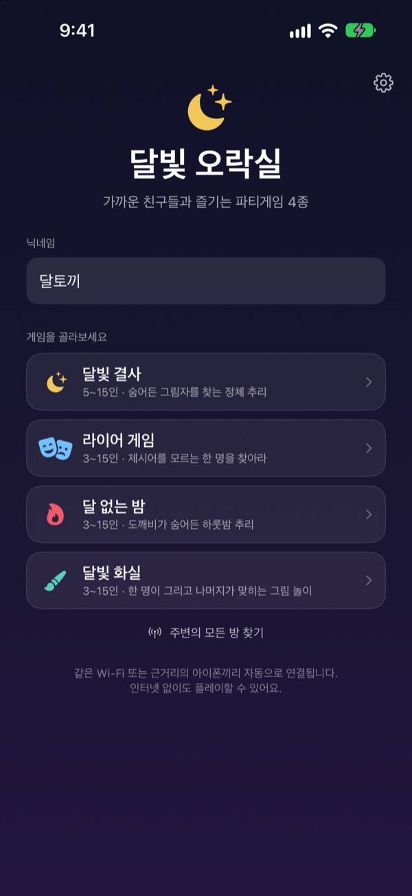
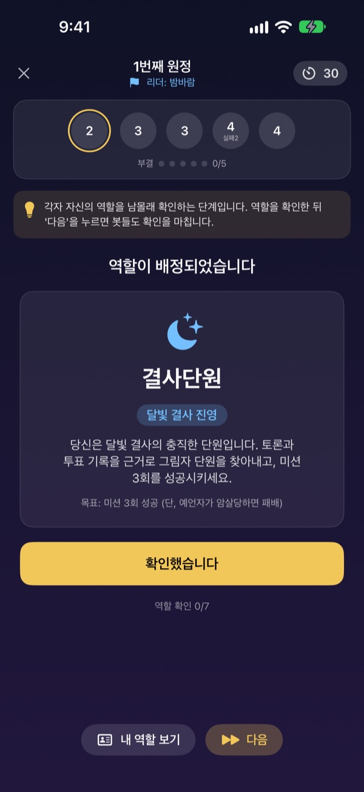
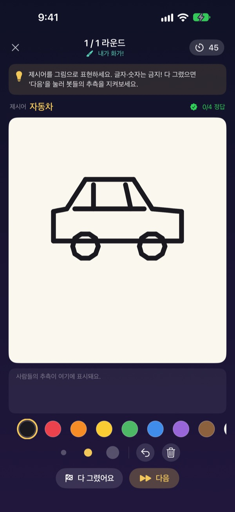
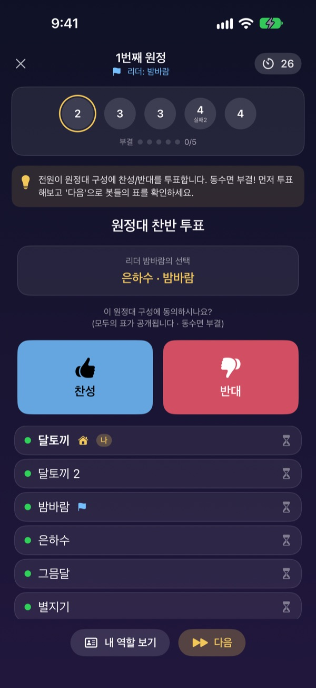

모이면 바로,
각자의 아이폰으로
한 사람이 방을 만들면 나머지는 근처에서 바로 들어옵니다. 역할과 제시어는 각자 화면에만 보이니 카드도, 진행자 메모도 필요 없습니다.
모든 게임 무료. 계정도 인터넷도 필요 없습니다.

라이어 게임 한 판 맛보기
아이폰 다섯 대가 놓여 있다고 생각하고 하나씩 눌러 확인해 보세요. 한 명만 제시어를 모릅니다. 친구들과 화면을 돌려 가며 해도 됩니다.
여럿이 모였는데, 뭘 하고 놀지 막막할 때
MT, 회식 뒤풀이, 명절 저녁. 마피아를 하려면 누군가 진행을 맡아 게임에서 빠져야 하고, 종이 쪽지는 접다가 다 보입니다. 와이파이가 약한 숙소에서는 온라인 게임도 안 됩니다. 달빛 오락실은 진행도, 역할 나누기도, 연결도 아이폰이 대신합니다.
역할과 제시어는 내 화면에만
게임이 시작되면 각자의 아이폰에 역할이나 제시어가 따로 도착합니다. 카드를 돌리거나 다 같이 눈을 감을 필요가 없습니다.
투표할 때는 누가 투표를 마쳤는지만 보이고, 어디에 투표했는지는 공개될 때까지 비밀입니다.

분위기에 맞는 네 가지 게임
말솜씨로 겨루는 라이어 게임, 원정과 투표로 그림자를 찾는 달빛 결사, 하룻밤 사이 도깨비를 찾는 달 없는 밤, 한 명이 그리고 모두가 맞히는 달빛 화실.
달빛 결사는 5명부터, 나머지는 3명부터 최대 15명까지 함께합니다.

처음 해 보는 게임도 금방
게임마다 게임방법 모드가 있어서 봇들과 한 단계씩 직접 해 보며 규칙을 익힙니다. 화면 위 안내를 읽고 다음을 누르면 됩니다.
앱이 꺼지거나 연결이 끊겨도 홈 화면의 이어서 하기로 하던 판에 그대로 돌아옵니다.

시작은 세 단계면 됩니다
- 1
닉네임과 게임 고르기
모두 앱을 열고 닉네임을 적은 뒤 할 게임을 고릅니다.
- 2
방 만들기, 참가하기
한 사람이 방을 만들고, 나머지는 주변 방 찾기로 들어옵니다.
- 3
방장이 시작
모두 들어오면 방장이 시작을 누릅니다. 진행은 앱이 맡습니다.
네 가지 게임
- 라이어 게임 · 3~15명
- 모두 같은 제시어를 받는데 한 명만 모릅니다. 돌아가며 한 마디씩 설명하고 라이어를 투표로 찾습니다. 잡힌 라이어가 제시어를 맞히면 역전승입니다.
- 달빛 결사 · 5~15명
- 결사 단원 사이에 숨은 그림자를 찾는 정체 추리입니다. 리더가 원정대를 고르면 모두 찬반 투표를 하고, 원정대는 몰래 성공이나 실패를 냅니다. 원정 세 번이 먼저 성공하느냐 실패하느냐로 승부가 납니다.
- 달 없는 밤 · 3~15명
- 도깨비가 숨어든 하룻밤입니다. 밤에는 무당, 밤손님, 장난꾼이 각자 몰래 움직이고, 날이 밝으면 토론 뒤 단 한 번의 투표로 도깨비를 찾습니다.
- 달빛 화실 · 3~15명
- 한 명이 제시어를 그리고 나머지가 채팅으로 맞힙니다. 빨리 맞힐수록 점수가 높고, 많이 맞힐수록 화가도 점수를 얻습니다.
어느 게임이든 게임방법 모드에서 혼자 봇들과 먼저 해 볼 수 있습니다.
자주 묻는 질문
주변에서 방이 보이지 않아요.
방장과 참가자가 같은 Wi-Fi에 있거나 서로 가까이 있는지 확인해 주세요. 설정 ▸ 개인정보 보호 및 보안 ▸ 로컬 네트워크에서 달빛 오락실이 켜져 있어야 주변 기기를 찾을 수 있습니다. Wi-Fi와 블루투스를 모두 켜 두면 가장 안정적으로 연결됩니다.
처음 열 때 로컬 네트워크 허용을 묻는데 꼭 눌러야 하나요?
네. 근처 아이폰을 찾아 연결하는 데 필요합니다. 실수로 거부했다면 설정 ▸ 개인정보 보호 및 보안 ▸ 로컬 네트워크에서 다시 켤 수 있습니다.
게임 중에 연결이 끊겼어요.
앱을 다시 열고 홈 화면의 이어서 하기를 누르면 같은 방, 하던 판으로 돌아옵니다. 역할과 점수도 그대로 남아 있습니다. 오래 돌아오지 못하면 방 목록에서 다시 참가해 주세요.
누가 응답이 없어서 게임이 멈췄어요.
방장은 응답 없는 참가자를 언제든 내보낼 수 있고, 게임은 남은 인원으로 다시 판정해 이어집니다. 진행자 모드에서는 멈춘 단계를 넘길 수도 있습니다.
최소 몇 명이 필요한가요?
달빛 결사는 5명, 라이어 게임, 달 없는 밤, 달빛 화실은 3명부터 시작할 수 있고, 모두 최대 15명까지 함께합니다. 사람이 모자라면 게임방법 모드에서 봇들과 규칙부터 익혀 보세요.
인터넷이나 계정이 필요한가요?
아니요. 회원가입, 로그인, 인터넷 연결 없이 근처 아이폰끼리 직접 연결해 플레이합니다. 게임 데이터는 서버로 보내지 않습니다.
시리로 방을 만들 수 있나요?
네. 달빛 오락실에서 방 만들기, 달빛 오락실에서 주변 방 찾기라고 말하면 됩니다. 단축어 앱에서 봇과 연습하기도 쓸 수 있습니다.
버그를 알리거나 건의하고 싶어요.
앱의 설정(톱니바퀴) ▸ 지원에서 바로 보내거나 아래 이메일로 연락해 주세요. 최대한 빨리 답변드리겠습니다.
버그 제보, 건의, 그 밖의 문의는 mizzking75@gmail.com로 보내 주세요.